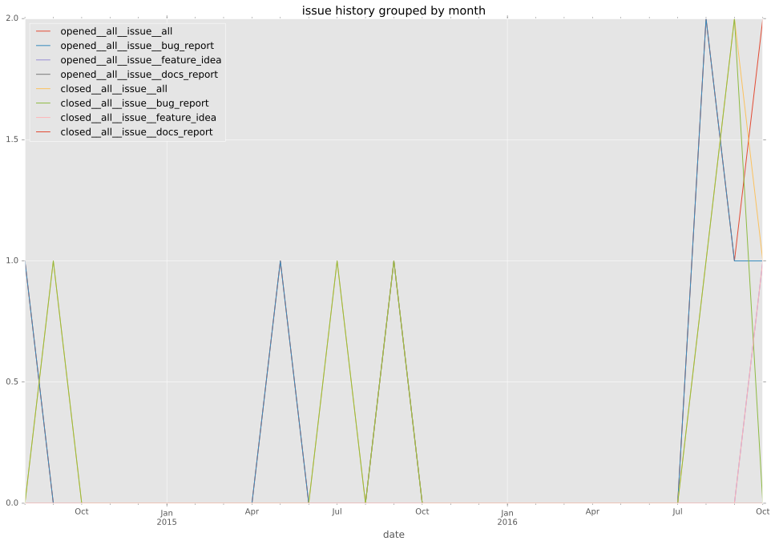
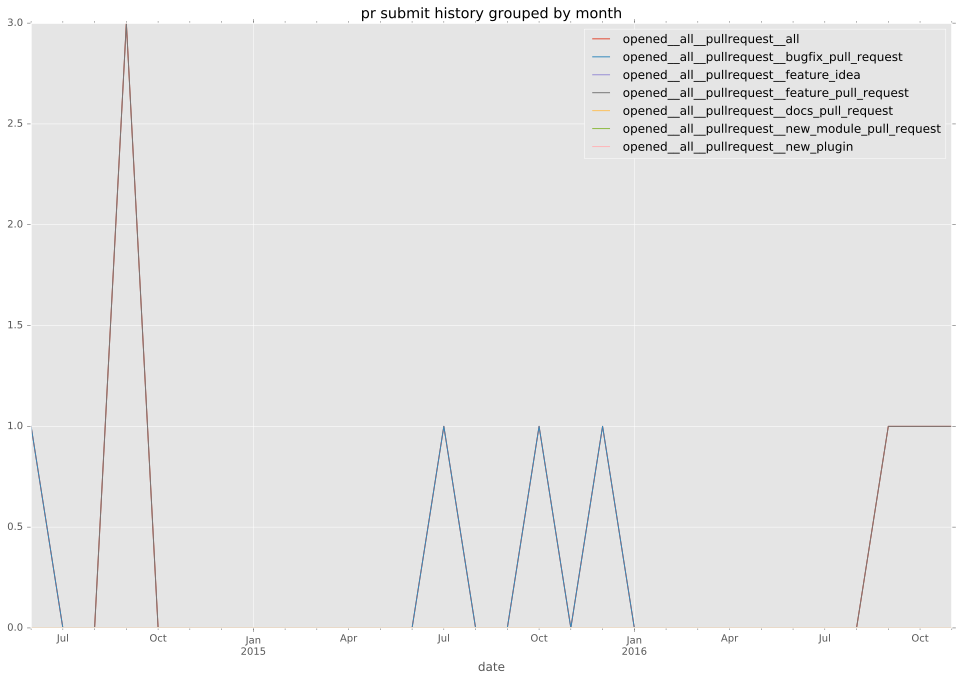
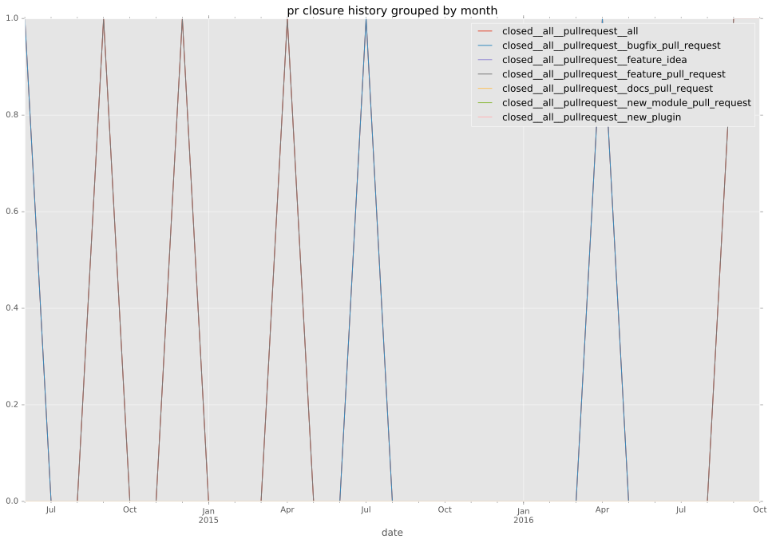

authors
maintainers
- nitzmahone
contributors
- abadger : 1 commits
- sivel : 11 commits
- cchurch : 29 commits
- angstwad : 2 commits
total issue counts
feature pull request: 5
bugfix pull request: 4
pullrequest: 9
issue: 6
bug report: 6
issue history

pullrequest history


days open by issue type
bugfix pull request
count: 5
std: 52.3239906735
min: 0
max: 117
median: 0.0
mean: 23.4
all
count: 19
std: 62.924441834
min: 0
max: 192
median: 20.0
mean: 44.5263157895
pullrequest
count: 0
std: nan
min: nan
max: nan
median: nan
mean: nan
feature pull request
count: 8
std: 81.9738634305
min: 0
max: 192
median: 48.0
mean: 69.5
issue
count: 0
std: nan
min: nan
max: nan
median: nan
mean: nan
bug report
count: 6
std: 30.2748520503
min: 0
max: 81
median: 26.5
mean: 28.8333333333
closures grouped by total days open